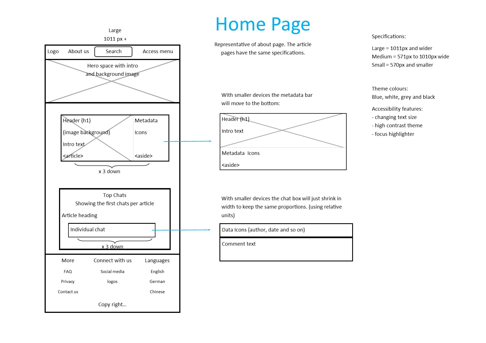
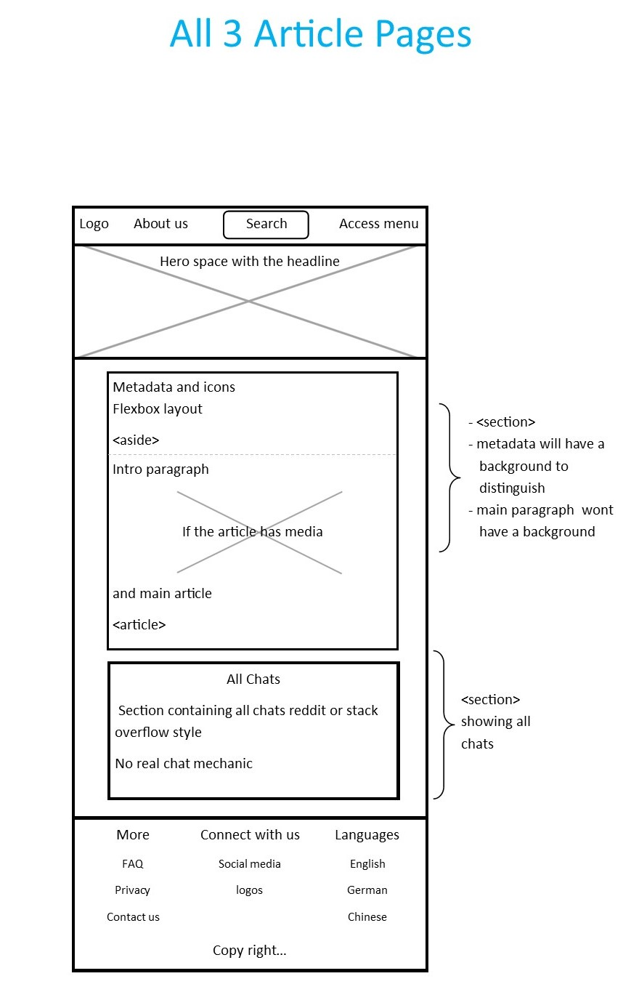

Web Development Final Report
Student number: 210103328
This report aims to inform the reader about all aspects regarding the website TechUP. The website is a
news-like website aimed at technology enthusiasts and intends to enable a similar community chat mechanisms
as Stack-overflow or Reddit. The Homepage will display reviews of the news articles. These previews then
link to the articles for in-depth reading and a discussion of thoughts at the end. As mentioned, the target
audience is the tech community. Providing discussion material for all technology related categories. The
discussion material will be written by verified and well-informed sources, this aims to prevent false news
and the like.
Inspiration
As the author of this website, I was primarily inspired by my love for the tech world and its wide range
of categories. Sine we are tasked with a news website, I took inspiration from the short tech news videos
found on YouTube. Examples include the channel TechLinked or Gamers Nexus . I wanted to provide relevant
news and enable a community like discussion on the topics at hand. That is where the communities of stack
overflow and reddit inspired me. And so, TechUP was born.
Accessibility
To ensure the enjoyment of all TechUP users. The site incorporates three accessibility aids.
First, a option to change the text size of the entire website. This empowers the user to adjust
according to reading or navigating comfort. The options include small, aimed to increase readability
on odd sized devises. Next is the default medium sized option with a comfortable text size and finally
a large text size to assist with visual or literate impaired individuals. As a result of this text changing
effort, the site took minor artistic defects.
Second, aid is a change in contrast. This feature switches between a colourful site and text to a grey
scale site. This drastically increases the contrast and helps the reader.
Finally, the focus highlighter. This feature toggles the tab selector to a thick and red outlined selector
or resets it to the default thin and grey selector. This will aid with navigating the web page with the tab
button.
Usability
No site is popular without an excellent layout for ease of use. TechUp aims to achieve this by keeping a
classic and intuitive website structure, so people don’t have to study the layout and search for
functionality, everything is where they are used to having it. Next, we have adequate use of white space.
Elements on a page that need attention will get it by means of surrounding it with sufficient nothingness.
Finally, the site is designed to never have too much information or elements focused in one area. Allowing
a comfortable reading flow, everything relevant is grouped and well organised.
My learnings
First and foremost, I’d like to credit W3Schools’ documentation and explanations. I spend a lot of time on
that website looking for new features, understanding them and figuring out why my code does not do as I need
it to. Especially with CSS and JS where the parameter combination or sequence is essential.
From that site I also learned the use of CSS variables and how to manipulate then with JS. This made the core
of the accessibility features. Also, the CSS background-blend ability. It helped a lot with correcting the
background image contrast to the foreground text.
To use Handlebars to the fullest I studied a YouTube series by Mr. Finelli. In it he explained the fundamental
mechanics that allow extensive templating. I drew inspiration from his approach to use handlebars to generate
near limitless websites with only a database. He also showed a slightly different approach to render the
templates than what we were shown in class. Note, I could not copy his code since he implemented his with
JQuirey and my functionality drastically differs from his. All I did was copy his idea to template pages.
I used the class examples to get started and fundamentally adapted it from there.
Good aspects
Things I think really worked well are the following.
The fundamental incorporation of handlebars. The way its functionality is built into the website allows for
several unique features. First, custom HTML. Since HTML code first gets compiled and then rendered means that
we can use the input data to uniquely identify content by using the data’s ID values. For example: the CSS IDs
and classes have values depending on its location in the database or passing custom values to the JS function
calls. This ability is the core to a templating approach that enables near limitless web pages that can be
generated with JS, Handlebars and the JSON database. As a matter of fact, with a few modifications to the
website code will it be possible to have as many article pages and article previews as there are database
entries. I really like this approach, let the computer do all the work for us. Unfortunately, due to the time
limit and project requirements, I was not able to fully implement such functionality.
Another thing that works well is how the comments get rendered on the article pages. The JSON database has a
nested comment structure and to ensure all comments get rendered I build a recursive function that obtains all
comments regardless of how deep they are nested. It uses handlebars to compile each comment individually and
adds the custom compiled code to a string variable. This string variable will then be used to populate the HTML.
Finally, the article preview scroll. On the home page we have a preview of all articles. When one hovers over
the article text it will slowly scroll up and show the main article text. At the end of the article the scroll
will stop. Then the user can either preview the next article, in which case the text locations will be reset
and ready for the next run. Or click on the article to go to the full article page.
Bad aspects and to improve
Unfortunately, I could not spend enough time on CSS responsiveness. The site is responsive but not as much
as I’d hope to achieve. CSS not as straight forward as I hoped. After all there is a reason for all the CSS
memes. Also, I should have gone all in on the em unit approach, as shown in a webinar, or stick to the relative
unit approach from the start.
Another thing I wish to improve next time is better planning to incorporate accessibility features.
The change in text size gives me headaches with certain screen sizes.
Ultimately, the good old problem of running time. The more time the better the functionality and content
of the website. Even though I am satisfied with the final result and time planning. There remain a few
features I wish to improve or add to have the website resemble the real counterparts.
References
Sources
Access menu drop down:
W3Schools.com, "How TO - Clickable Dropdown", -. [online]. Available:
https://www.w3schools.com/howto/howto_js_dropdown.asp. [accessed 3-08-2022]
JS animation
W3Schools.com, "How TO - JavaScript HTML Animations", -. [online].
Available: https://www.w3schools.com/howto/howto_js_animate.asp. [accessed 4-08-2022]
Handlebars
Handlebarsjs.com, 'Handlebars Reference', 2021. [Online]. Available:
http://handlebarsjs.com/guide/ [Accessed: 11-08-2022]
Only for guidance, no coping
R., Finelli, "Handlebars Training", 2016. [tutorial].
Available: https://www.youtube.com/watch?v=2sXjmewEQOY&list=PLtV5RF44Yj8S4RcpQehL-2XMuVsJXwNvK [Accessed: 11-08-2022]
R., Finelli, "Handlebars-course", 2016. [tutorial].
Available: https://bitbucket.org/richfinelli/handlebars-course/src/master/ [Accessed: 11-08-2022]
Images:
AMD_vs_Intel gadgetmandu.com, https://www.gadgetmandu.com/2020/05/07/intel-vs-amd-gaming/ [accessed 12-08-2022]
GPU price chart tech4gamers.com, https://tech4gamers.com/gpu-prices-expected-to-drop-in-3-years/#:~:text=Recently%2C%20it%20has%20been%20reported%20that%20the%20cost,price%20of%20graphics%20cards%20will%20plummet%20by%208-12%25 [Accessed 16-08-2022]
RTX 3090 Wallpaper www.nvidia.com, https://www.nvidia.com/en-us/geforce/community/wallpapers/#rtx-3090-wallpapers [accessed 16-08-2022]
All other images come from:
https://wallpaperaccess.com
Icons:
These are two sets I partly used
IconsMind, "Line", 2014, (Linkware) [online], Available: https://iconarchive.com/artist/iconsmind.html [accessed 11-08-2022]
Link to IconsMind website http://www.iconsmind.com
Icons8, "iOS 7", 2014, (Linkware) [online] Available:
https://iconarchive.com/show/ios7-icons-by-icons8.html [accessed 11-08-2022]
Link to Icons8 website http://icons8.com
Logo:
Logo was created with the Key word "T U" and a generated image was downloaded
brandcrowd.com, [online] https://www.brandcrowd.com/ Generation link: https://www.brandcrowd.com/maker/logos?text=T%20U&searchText=T%20U
[accessed 16-08-2022]
Import JSON
Marconymous, "Import a local JSON using JavaScript", 2021, [comment] Available:
https://stackoverflow.com/questions/67734739/import-a-local-json-using-javascript [accessed 12-08-2022]
Article text
AMD vs Intel: P., Alcorn, "AMD vs Intel: Which CPUs Are Better in 2022?", 2022, Available:
https://www.tomshardware.com/features/amd-vs-intel-cpus [accessed 29-08-2022]
GPU prices: J., Walton, "Most GPUs Now Start Below MSRP: Graphics Card Prices, August 2022", 2022, Available:
https://www.tomshardware.com/news/graphics-card-prices-august-2022 [accessed 9-08-2022]
Zero day; V., Petkauskas, "Gods of cyberwar: the booming of an unregulated zero-day industry", 2021, Available:
https://cybernews.com/security/gods-of-cyberwar-the-booming-of-an-unregulated-zero-day-industry/ [accessed 29-08-2022]
Tools used
Contrast checker
https://contrastchecker.com/
HTML Validator
https://validator.w3.org
VS Code
https://code.visualstudio.com/Download
Appendices:
Site Map

Wireframes


Mockups
In a webinar I was told screen shots will suffice
Home Desktop


Home Tablet


Home Mobile


Article page desktop


Article page tablet


Article page mobile


About Desktop and Tablet